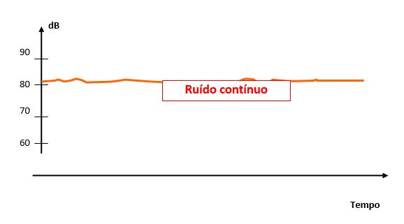
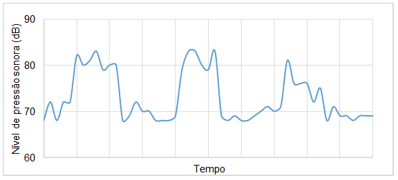
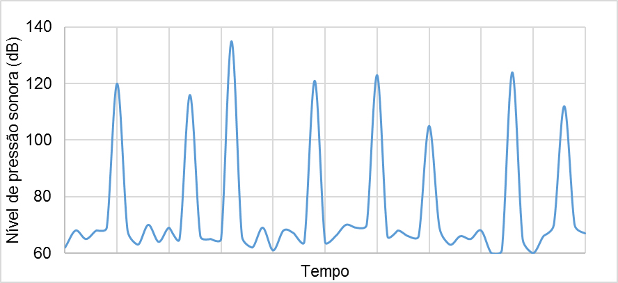

Os agentes físicos são as variadas formas de energia que os trabalhadores possam estar expostos. Esses agentes têm o potencial de alterar as características físicas dos ambientes de trabalho. São eles: ruídos, vibrações, pressões anormais, temperaturas extremas (frio e calor), radiações ionizantes, radiações não ionizantes e umidade.
O contato do empregado com um agente físico pode ocorrer, de modo geral, de duas formas: com e sem contato direto com a fonte. Por exemplo, nas exposições à vibração de mãos e braços e de corpo inteiro, o trabalhador tem contato direto com a superfície vibrante, ao segurar a empunhadura de uma motosserra ou ao operar uma escavadeira, sentado no assento do veículo. Em outros casos, o contato ocorre sem que exista a necessidade de ser direto. Por exemplo, na exposição ao ruído intermitente, o empregado operando a motosserra está exposto ao ruído intermitente, mas os demais empregados no entorno também estão, mesmo atuando em outras atividades. O ruído intermitente não exige um contato direto, pois as ondas sonoras se propagam através do ar.
O conhecimento dos agentes físicos para o Técnico de Segurança do Trabalho é de extrema relevância, pois são os agentes que podem modificar as características do ambiente de trabalho e, consequentemente, a forma da execução das atividades. Com isso, podemos agir preventivamente sobre eles e evitar o desenvolvimento de doenças ocupacionais.
A maioria das indústrias apresenta o ruído como um problema a ser resolvido e que pode ser causado pelos processos industriais em si ou pelo fluxo constante de matérias-primas e produtos, que são trazidos, despejados, carregados e levados, operações estas geralmente ruidosas.
O que é o ruído?
Som ou ruído é o nome dado a qualquer vibração que ocorre em um meio elástico, geralmente o ar, que é capaz de ser percebido pelo ouvido humano. De maneira geral reserva-se o nome de ruído aos sons desagradáveis, indesejáveis, e o nome de som a uma sensação prazerosa, desejada, como a produzida pela música.
Entretanto, é preciso ter claro que, seja prazeroso ou não, se estiver elevado, som ou ruído podem provocar danos à audição. O efeito do ruído sobre o organismo é o da redução da capacidade auditiva e até surdez permanente. A consequência direta para o empregado é a irritabilidade, dor de cabeça, mal-estar, fadiga, redução da produtividade, aumento de acidentes, entre outros fatores.
Importante: As alterações danosas aos trabalhadores poderão manifestar-se imediatamente ou gradualmente dependendo do tempo de exposição, do nível sonoro e da sensibilidade individual.
O tempo de exposição ocupacional deverá ser menor à medida que o nível de ruído aumentar.
O som ou ruído tem duas características principais:
Como saber se o ruído do ambiente de trabalho é elevado?
Existem diversas maneiras de saber se o ruído no local de trabalho é elevado, desde as mais simples até por meio de medições com aparelhos. A primeira maneira é observar se o ruído atrapalha a conversa entre duas pessoas com audição normal, pois elas emitem sons com nível de pressão sonora em torno de 65-70 dB. De uma maneira geral, sempre que o ruído existente no ambiente dificultar a conversa entre duas pessoas com audição normal é porque o nível de ruído muito provavelmente está acima de 85 dB.
Uma segunda maneira é por meio do relato de trabalhadores que estão há mais tempo no trabalho. Os relatos podem indicar uma diminuição da audição gradual em trabalhadores de determinado setor. Mas essa prática não condiz com a prevenção em saúde e segurança do trabalho e, dessa forma, não devemos adotá-la, pois existem maneiras mais precisas de saber o nível de ruído por meio da medição com equipamentos específicos.
Há aparelhos que medem a energia sonora e apresentam valores em decibéis e em outras escalas: os sonômetros (ou decibelímetros) e os dosímetros de ruído (ou audiodosímetros). Em alguns modelos, há também o registro do espectro de frequência do ruído.
É importante medir os níveis de pressão sonora e o espectro de frequência do ruído, não apenas para comprovar a existência do risco, mas principalmente para permitir a indicação de medidas de controle adequadas.
Existem três principais "tipos" de ruído nos ambientes de trabalho: contínuo, intermitente e de impacto. É preciso considerar este aspecto quando realizar a avaliação em um determinado ambiente.

Figura 01: Gráfico ruído contínuo (quantidade de decibéis X tempo)
Fonte: <http://wwwp.feb.unesp.br/jcandido/acustica/Apostila/Capitulo%2008.pdf>. Acesso em: 06 dez. 2016.
O gráfico apresenta o ruído contínuo, composto por uma linha horizontal referente a unidade tempo e, uma linha vertical, referente ao nível de ruído em decibéis, com quatro marcações (60, 70, 80 e 90 decibéis). Na altura de 80 decibéis é traçada uma linha reta (com pequenas variações) paralela à linha do tempo.
Intermitente: é o ruído que, geralmente, encontramos no interior das empresas. São os ruídos mais encontrados na exposição ocupacional. Podemos encontrá-los nos trabalhos manuais, na afiação de ferramentas, na soldagem, na construção civil.

Figura 02: Gráfico de ruído intermitente (nível de pressão sonora x tempo)
O gráfico apresenta o ruído intermitente, composto por uma linha horizontal referente à unidade de tempo e uma linha vertical referente ao nível de ruído em decibéis, com quatro marcações (60, 70, 80 e 90 decibéis). O ruído inicia próximo a 70 decibéis e se eleva até um patamar pouco superior a 80 decibéis; retorna a um nível médio próximo a 70 decibéis, e assim sucessivamente. Essa variação é representada por uma linha contínua.
De impacto ou impulsivo: é caracterizado por picos de intensidade. Porém, duas condições devem ser satisfeitas: os picos devem ocorrer com intervalos maiores do que um segundo e a duração de cada pico deve ser menor do que um segundo. Se ambas as condições não forem satisfeitas, então o ruído deve ser considerado intermitente. O ruído de impacto pode ser encontrado na operação de um bate-estacas.

Figura 03: Gráfico de ruído de impacto (nível de pressão sonora x tempo)
O gráfico apresenta o ruído de impacto (ou impulsivo), composto por uma linha horizontal referente à unidade tempo e uma linha vertical referente ao nível de ruído em decibéis, com cinco marcações (60, 80, 100, 120 e 140 decibéis). Na altura de 65 decibéis, é traçada uma linha reta paralela à linha do tempo. Passado algum tempo, o ruído é elevado para níveis acima de 100 decibéis. O pico de ruído é representado por uma linha quase paralela ao eixo vertical. Em pouco tempo, o pico volta a baixar ao nível de ruído de 65 decibéis e assim continua sucessivamente pelo tempo de exposição ao ruído de impacto.
Na maioria dos casos, a exposição ao ruído sem controle leva à perda auditiva gradual. Contudo, em outros, quando o nível de pressão sonora é extremamente elevado, a perda auditiva pode ocorrer em uma única exposição. Situações assim são caracterizadas como risco grave e iminente. Além disso, os limiares para ruído contínuo e intermitente diferem do limiar para ruído de impacto. Os valores de tais limiares devem ser consultados nas normas que tratam desses fatores de risco.
Para se ter uma ideia da sensação humana quando o ouvido é exposto a diferentes níveis de pressões sonoras (NPS) que o estimularam, utiliza-se o decibel que exprime o nível de intensidade acústica.
O ruído só nos interessa pelo desconforto ou pela surdez que ele é susceptível de causar no homem. Portanto, estamos interessados não pelo ruído tal como ele existe fisicamente, mas pelo ruído como ele é ouvido e como ele age sobre o organismo humano.
O limite de percepção varia enormemente em função da frequência. Por exemplo, na frequência de 1 kHz, a real intensidade do ruído é ouvida. Já em 100 Hz, o ruído será percebido como um ruído 20 dB a menos aproximadamente. Essa diferença é menor para frequências maiores. O ruído dobra de intensidade a cada aumento de 3 dB e cai pela metade a cada redução de 3 dB. Assim, um ruído de 80 dB é o dobro de 77 dB ou a metade de 83 dB.
Esta atenuação, realizada pelo ouvido em função da frequência, não é constante pois é necessário produzir um som de 40 dB a 100 Hz para dar a mesma impressão subjetiva da intensidade que um som de 20 dB a 1000 Hz.
Para contornar o problema de dar apenas um único valor a um conjunto de sons que reflita adequadamente a sensação humana e que permita avaliar o risco de desconforto ou de dano auditivo de uma forma simples é que foram criados os decibéis compensados. Isto deriva do fato de o sistema auditivo humano ter sensibilidade diferente para frequências diferentes.
Para baixas frequências a sensibilidade do ouvido é baixa. Para frequências médias (de 1000 Hz a 4000 Hz) o sistema auditivo é altamente sensível. Já para as altas frequências volta a “abafar” o som.
Todo esse trabalho de compensação é feito pelos aparelhos de medição automaticamente, sendo utilizados diferentes critérios de compensação, chamados de curvas ou escalas de compensação, identificados por letras: A, B, C etc. Atualmente utiliza-se uma ponderação em frequência idêntica qualquer que seja o nível para estabelecer normas de conservação auditiva.
A ponderação na escala de compensação A é aplicada nos casos de ruído contínuo ou intermitente. No caso de ruído de impacto, pode-se aplicar uma escala de compensação ou não. Quando há escala aplicada, ela é a escala C; quando não há, ela é dita Z ou “lin” (de linear). Veja como a questão da escala é informada junto aos valores em decibéis:
No Brasil, as NRs 9 e 15 tratam da questão da exposição ocupacional ao ruído para fins de prevenção e de insalubridade, respectivamente. Ruído contínuo e ruído intermitente são tratados pelas normas da mesma forma. Já o ruído de impacto conta com características distintas e é tratado à parte nessa legislação. A avaliação da exposição ao ruído, por meio da utilização de audiodosímetros, possibilita um resultado mais correto sobre as exposições ao ruído no ambiente de trabalho, devendo ser respeitado o período de realização de toda a atividade.


- Estar navegando no Google Chrome
ou
- Ter uma máquina virtual para criação de PDFs instalada no computador, como Adobe PDF e doPDF
O Google Chrome nativamente já oferece suporte para conversão de conteúdo HTML em PDF, diferentemente de Firefox, Internet Explorer e outros. Nestes casos, a máquina virtual é importante.
Envie o documento para impressão clicando no botão Imprimir ou usando o comando Ctrl + P.
Na opção Destino, altere a impressora para Salvar em PDF.
Clique em Imprimir.
Escolha um local para salvar o arquivo e, se necessário, altere o seu nome.
Clique em Salvar.